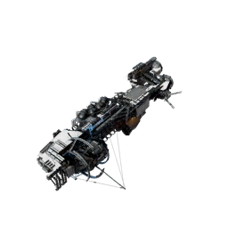

XL battleship, made by Argon
Buy it for the streamer: !buy ship erlking for 49,735 coins
Adopt one the streamer owns: !fleet lists them with their ID, then !buy adopt <ID> for 12,434 coins. It is renamed after you.
With the advent of the Dark, Avarice was forced to rely on a fleet of stranded ships that had been taken by surprise by the Jump Gate shutdown. Despite the almost immediate collapse of the Avarice company, capable scientists and engineers soon took it upon themselves to stabilise the system and work towards sustainability. They first established a functioning wharf for repairs and replacement, and conducted early experiments into developing a recycling economy in anticipation of dwindling resources within the system. The regeneration of this post-shutdown economy was quickly curtailed by the first Tides, which destroyed most stations and ships in the system in 800 (NT). However, a side-effect of the destructive solar event was the greatly increased energy output from solar panels, which allowed for a paradigm shift. The new Rakers economy emerging from Tidebreak, at the time the only station in Avarice, took advantage of this new abundance of energy. This, along with the use of local wrecks, enabled the rebuilding of a new, sustainable, closed-loop economy based on recycling, allowing them to further improve on previous ship and station module designs. Resettlement of Avarice began in 818 (NT), when the Northriver Company introduced Protectyon and the associated Protectyon Shield Generators to safeguard stations from the Tide. A few years later, in 825 (NT), the reconnection of Windfall gave the long-isolated Rakers the opportunity to trade with various Syndicate factions, but also exposed them to their piracy.
Shortly after the first Tides in 800 (NT) devastated the Avarice system, nomad engineers on Tidebreak, under their lead engineer Sihi Do, began the Erlking project. This project was an attempt at building a capital ship, sturdy enough to withstand the Tide and be used as a mobile base in Avarice. No sooner had they succeeded in providing the ship with sufficient shielding, than they abandoned all work on the barely operational Erlking. They refocused their attention on another, undisclosed, major project, before ultimately disappearing. Despite being unfinished, the Erlking continued to be deployed, while Tidebreak engineers repeatedly attempted, and failed, to improve on, or even reproduce, the design's unique power core.
With the connection of Avarice to the more militarised Syndicate system in 821 (NT), Tidebreak engineers attempted to weaponise the Erlking, and reclassified it as Battleship. They added turret and weapon hard-points, but failed to develop compatible turrets and weapons. The Syndicate later confiscated the ship to remove this potential military threat, and attempted to develop the weapon systems themselves. Among the engineers of Windfall, those of the Solid Ice Union had the most experience with capital ships, but the political situation, and fear of a power grab, meant that they were not allowed to work on the Erlking. Instead, the Scrapyard engineers were tasked with completing the weapon systems. Having previously failed to stabilise the energy supply on the Shih fighter, to increase the number of supported weapons, the Erlking presented them with the opposite problem: all efforts to connect conventional weaponry to its unique power grid resulted in them being blown off the hull. Attempts to modify either the power grid or the weapon systems were also in vain, but their work had started only recently and Syndicate expectations remained high.
| Hull | 500,000 |
|---|---|
| Crew | 328 |
| Missile storage | 300 |
| Weapon slots | 1 |
| Turret slots | 22 |
| Shield slots | 14 |
| Engine slots | 3 |